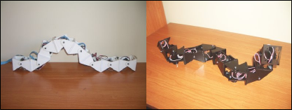

{kind=link}

Hoy he entregado el borrador de tesis en el departamento: TESIS_RC1. La versión final tiene que estar lista para el 11 de Octubre, así que todavía se pueden introducir cambios y modificaciones menores. Todavía no tengo fecha para la lectura, pero si todo va bien, será a mediados de Noviembre.
Cualquier realimentación será bienvenida
Enhorabuena!! Que envidia me das, con lo q me queda a mi. Si presentas antes del 14 de noviembre iré, si es justo después no podré porque me voy a Japón al DARS (distributed and autonomous robotic systems) 😉
La semana que viene le echo un vistazo a la tesis y te doy feedback.
Un abrazo!
¡Enhorabuena!
Sólo me he leido algunas partes y creo que son muy buenas, como te caracteriza escritas muy claras sin perder el rigor que requiere un escrito como este.
Es un gran trabajo que será de muchÃsima utilidad como base de estudio para este tipo de robots.
Tenemos que quedar para celebrarlo.
Un abrazo.
Ricardo
Enhorabuena Juan, espectacular!
Pues tan solo decir que enhorabuena y que habrá que celebrarlo con un par de botellas de vodka.
Gracias 😀
Hasta que no la lea y termine definitivamente no quiero celebrar nada
Yo que tú haría la lectura al puro estilo de genio como Einstein, que de estos hay pocos. Ponte una capa y una espada láser o algo así 🙂 Bueno, mejor no, que arriesgas mucho. Casi mejor es dejarlo para alguna celebración.
jajajajajajaj Sí, sí, mejor no ariesgar jajajajajajj
Enhorabuena Juan! Ya no te acordarás de mi, soy Juanjo de la ponti. Espero que puedas presentarla pronto, seguro que ya tienes ganas 😉
Aprovecho también para saludar a Ricardo que hace mucho que no le veo, espero que le vaya todo bien.
Un abrazo y a seguir trabajando!
Hola Juanjo,
Muchas gracias 🙂 ¡Claro que sé quien eres! ¡Cuanto tiempo ha pasado! La última vez nos vimos en el campus de la UAM. ¿Qué tal te va todo? (Mejor mándame un mail privado)